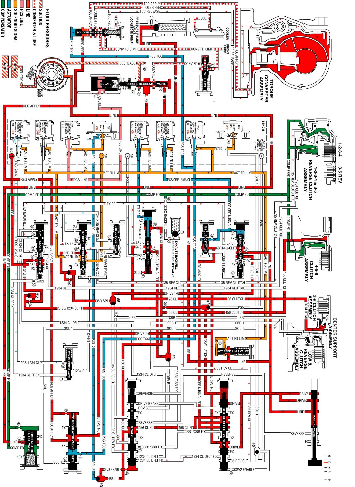

Drive Range, Sixth Gear
Drive Range, Sixth Gear
As the vehicle speed increases, the transmission control module (TCM) receives input signals from the automatic transmission input and output speed sensors, the throttle position sensor and other vehicle sensors to determine the precise moment to command ON the normally-low CB26 pressure control solenoid 4 (PCS). At the same time the normally-high C35R pressure control solenoid 2 is commanded OFF.
2-6 Clutch Applies
CB26 Pressure Control Solenoid 4
The CB26 pressure control solenoid 4 is commanded ON, allowing actuator feed fluid to enter the PCS 26 clutch fluid circuit. PCS 26 fluid is routed through orifice #44 and then to the 2-6 clutch regulator gain valve.
2-6 Clutch Regulator Gain Valve
The 2-6 clutch regulator gain valve allows the gain (valve input to output pressure magnification factor) of the 2-6 clutch regulator valve to be different for a 1-2 shift verses a 5-6 shift. For a 5-6 shift PCS 26 clutch fluid pressure passes through the hollow valve and only acts on the 26 regulator valve area, resulting in the "low gain" pressure output.
2-6 Clutch Regulator Valve
PCS 26 clutch fluid moves the 2-6 clutch regulator/gain valve assembly against the 2-6 clutch regulator valve spring force to allow 26 clutch/1234 clutch feed fluid to pass through the valve. The 26 clutch/1234 clutch feed fluid is routed into the 26 clutch fluid circuit where it passes through orifice #41 and then to the spring end of the 2-6 clutch regulator valve, and to the 2-6 clutch within the center support.
2-6 Clutch
The 26 clutch fluid from the 2-6 clutch regulator valve is routed through the center support and to the 2-6 clutch piston assembly. The 26 clutch fluid pressure moves the piston against 2-6 clutch spring force to apply the 2-6 clutch plates.
3-5 Clutch Releases
C35R Pressure Control Solenoid 2
The C35R pressure control solenoid 2 is commanded OFF, allowing PCS 35 reverse clutch fluid from the 3-5 reverse clutch boost valve and the 3-5 reverse clutch regulator valve to exhaust through the solenoid.
3-5 Reverse Clutch Boost Valve
The 3-5 reverse boost valve spring force moves the valve to allow 35 reverse clutch feedback fluid from the 3-5 reverse clutch regulator valve to enter the 35 reverse clutch circuit and exhaust.
3-5 Reverse Clutch Regulator Valve
The 3-5 reverse clutch regulator valve spring force moves the valve to allow 35 reverse clutch fluid from the 3-5 reverse clutch to pass through the valve and enter the exhaust backfill fluid circuit. The 35 reverse clutch fluid then enters the exhaust backfill fluid circuit and is routed through orifice #30 to the exhaust backfill pressure relief valve where excess pressure is exhausted.
3-5 Reverse Clutch
The 3-5 reverse clutch spring force combined with force from the compensator move the 3-5 reverse clutch piston to release the 3-5 clutch plates and forces 35 reverse clutch fluid to exhaust from 1-2-3-4 and 3-5 reverse clutch housing. The 35 reverse clutch fluid is then routed to the 3-5 reverse clutch regulator valve where it enters the exhaust backfill circuit.
Drive Range, Sixth Gear
Drive Range, Sixth Gear:
